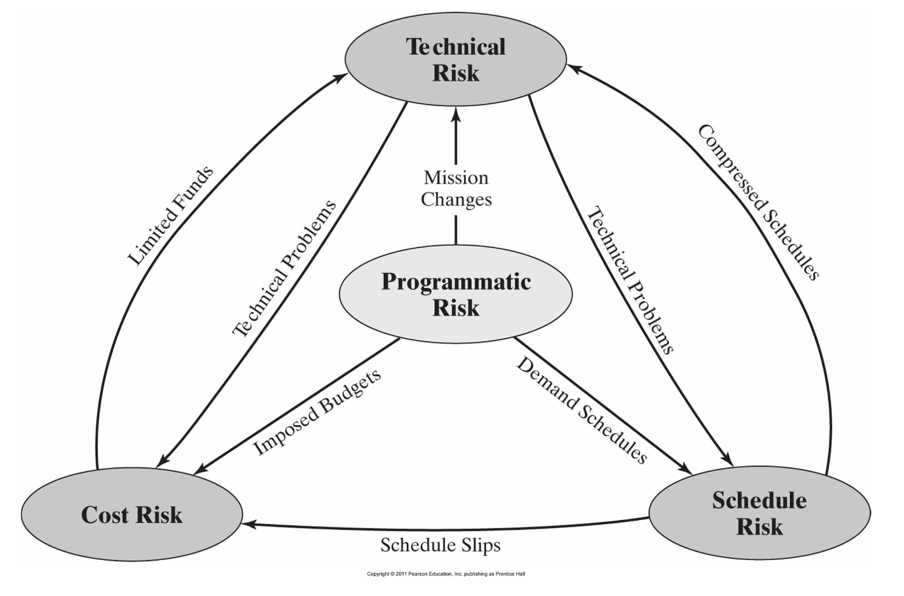
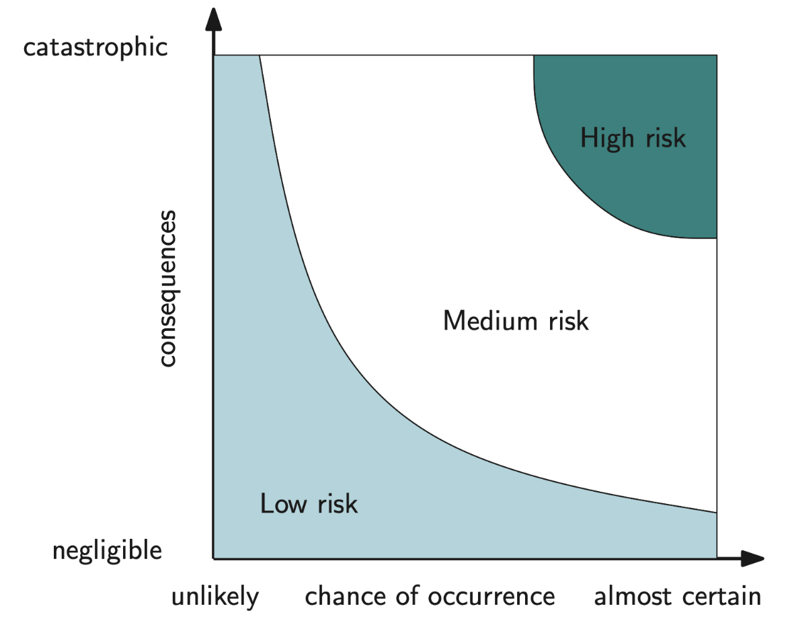
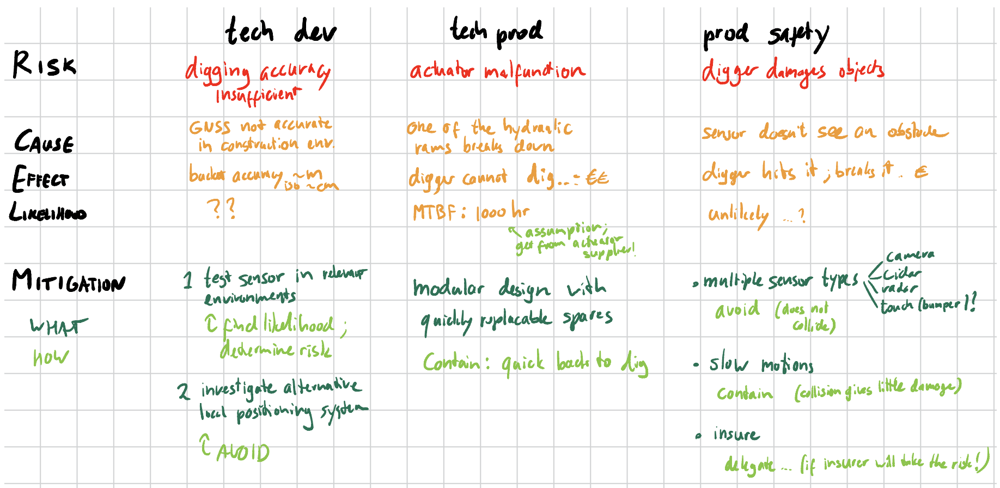
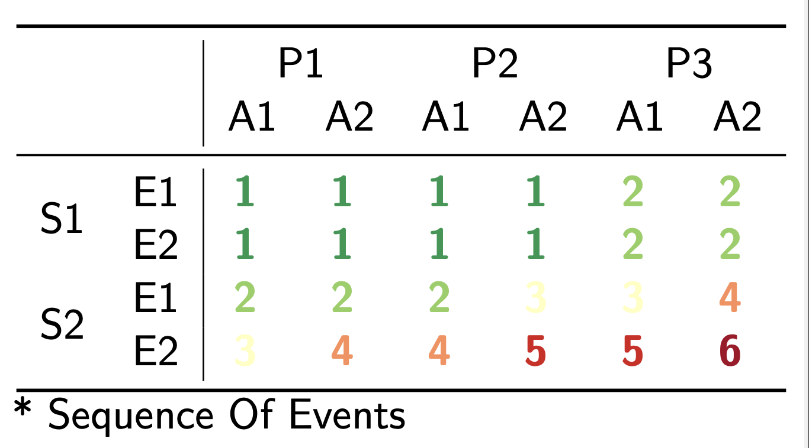
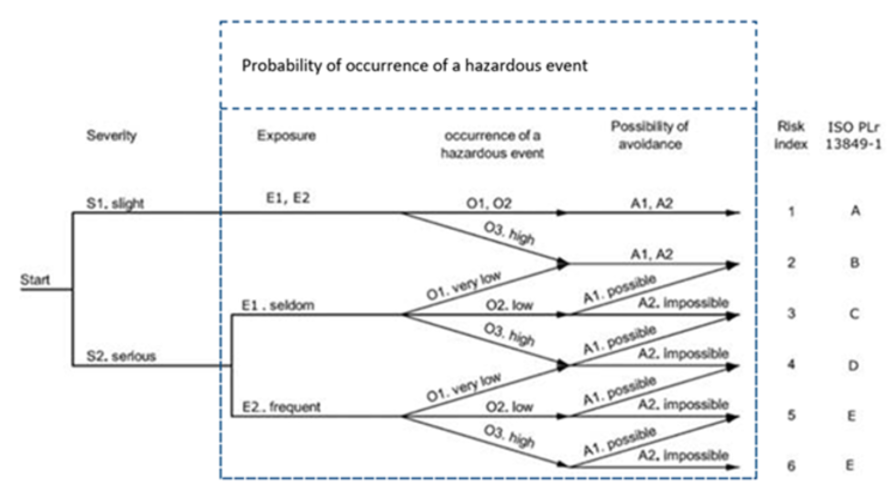

We continuously identify, treat and monitor risks throughout the V-Model.
P = Probability, C = Consequences
Risk Types
Project risks
- Technical
- Cost
- Planning
- Programme (external)
Other risks
- Safety
- SWOT
- Market
- Legal
Risk Relations

if situation, then consequence, for stakeholder.
Quantifying risk
- Risk Priority Number
- Monetary Cost
- …
It’s not an exact science.
Risk Handling

We have the following options considering
- Avoid: decrease P (get a chain, don’t get your bike)
- Contain: decrease C (not insurance), but more like buying a cheap second-hand bike
- Take: Fuck it, we commit
- Delegate: the formula stays the same, but it’s not you who’s serving the consequences. You buy insurance. If the bike is stolen, the insurance company pays you back
Bus Test
Let’s say there is a team member who is crucial to the mission and only they know how to solve a problem. That’s not how you want things to be. You want that person to share knowledge and avoid going into a crisis whenever they are not available. It prevents that person from taking other projects and developing outside their current area of activity, which might not be ideal for them.
Risk Management Plan (RMP)
In the Project Planning process, a risk management plan (RMP) is tailored to satisfy the policies, procedures, standards, and regulations related to and affecting the management of risks for the project.
Formulating Risks
For each, we should always formulate clearly and concisely:
- the cause,
- the effect,
- the likelihood.
And choose one mitigation:
- avoid,
- contain,
- delegate.
For example, let’s identify 3 risks for a robot digger on construction sites. And for each formulate the cause, the effect and the likelihood. Also choose one mitigation and describe how to lower the risk
- one technical development risk;
- one technical product risk;
- one product safety risk.

FMEA (Failure Mode and Effects Analysis)
Failure Modes
- something breaks
- human error
- part under-performs
- adverse environmental conditions
- wear & tear
Effects Analysis
- device completely malfunctions
- performance specs not achieved
- …
- requirements fail
- Identify failure modes
- predict / estimate effects
- determine remedy
Risk Priority Number
S = severity (consequences)
O = occurrence (probability)
D = detection
Unlikely-but-severe (black swan)
- S high
- O low
- D easy
Often-but-mild (gremlin)
- S low
- O high
- D medium
Run-of-the-mill
- S medium
- O medium
- D medium
To quantify, we can assume high = 10, medium = 5, low = 1.
Considering this, the run-of-the-mill type of risks should be always tackled first.
Risk Mitigation
Severity
- break the causal chain
- add redundancy
- shielding / armoring
- …
Occurence
- remove root cause
- over-dimension critical components
- preventive maintenance
- …
Detection
- inspection
- predictive maintenance
- sensors
- status: leds / lamps / checks / logging
- degradation / wear indicators
- …
Also, we should hold risk-related discussions with customers / stakeholders and collect any events for future learnings.
Safety
The product has to comply with Standards (ISO, IEC, EU, etc.). Usually the QA / RA engineers handle these things.
Risk index aspects
- Severity: how bad
- S1 Slight injury, e.g. scratches, bruising, light wound
- S2 Serious injury e.g. fatality, broken limbs, fractures, flesh wounds
- Exposure: how often
- E1 Seldom
- E2 Often (default)
- Probability: how likely is the SOE*
- P1 Almost impossible
- P2 Occasionaly
- P3 Likely
- Avoidance or reduction of harm
- A1 Possible (e.g. low speed)
- A2 Impossible

Risk Management Analysis

What is the result of risk management for the product design?
- Additional features or requirements may have to be added as mitigation for identified risks.
What is the difference between RMA and FMEA?
- Safety (RMA)
- Robustness (FMEA)
- Technical failures may lead to unsafe situations. (link between them)
The difference between Exposure, Probability and Avoidance.
- How often does the risky situation occur = E
- how large is the chance of the accident actually happening = P
- can the accident be prevented somehow? = A